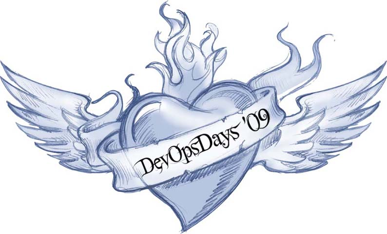
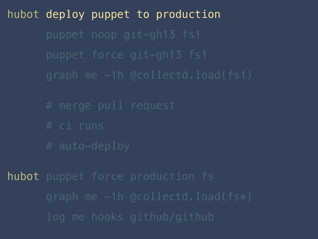

Dev to DevOps
Law of the Instrument
"If all you have is a hammer, everything looks like a nail."
Abraham Kaplan, 1918-1993 in 1964
Nails are ok.
I can deal with this...
Guitar-tool
G'Tool
Guitars are awesome!
I like this problem.
Angry Monster?
How about now?
Now?
More than one tool...
A tool for a big job...
A tool for a complicated job...
A tool to make our job cool and fun...

DevOps
A Brief History of DevOps
Mainframe
Punch Cards
Personal Computers
Users . . . The Wall . . . Operations
Patrick Dubois
Ghent, Belgium
Velocity Conference 2009, San Jose
Web Performance & Operations
10+ Deploys Per Day:
Dev and Ops Cooperation at Flickr
John Allspaw and Paul Hammond
Dubois missed it!
DevOpsDays 2009
DevOpsDays 2009
- Introducing Kanban in Operations
- Continuous Integration, Pipelines and Deployment
- Building Agile Infrastructures with Puppet
#devops
No such thing as a DevOps team
Jez Humble, Co-author of Continuous Delivery
[...] the Devops movement addresses the dysfunction that results from organizations composed of functional silos. Thus, creating another functional silo that sits between dev and ops is clearly a poor (and ironic) way to try and solve these problems.
#devops
So what, exactly...
... is the problem??
Why We Need DevOps Now:
A Fourteen Year Study Of High Performing IT Organizations
- Gene Kim
High Performance Organizations
- Deploy code 30x more frequently
- Complete deployments 8,000x faster
- 50% fewer failures
- Recover from failures 12x faster
The Dream
Cooperation & Collaboration

Culture...
Angry Monster
F@rget Culture...
Give me tools...
G'Tool
Common tools
We start taking down the wall...
Danger Zone!
"You need a culture that keeps pushing into the danger zone, and has the habits that enable you to survive in the danger zone."
Scott Cook
TurboTax did 165 new-feature experiments in the 3 month tax season
What does this look like?
Fail.
Puppet Manifest
def github(name, version, options = nil)
options ||= {}
options[:repo] ||= "boxen/puppet-#{name}"
mod name, version, :github_tarball => options[:repo]
end
github "gcc", "1.0.0"
github "git", "1.2.2"
github "homebrew", "1.1.2"
github "nginx", "1.4.0"
github "nodejs", "2.2.0"
github "ruby", "4.1.0"
github "stdlib", "4.0.2", :repo => "puppetlabs/puppetlabs-stdlib"
github "sudo", "1.0.0"
Complete fail.
Boxen Project Manifest
class projects::trollin {
include icu4c
include phantomjs
boxen::project { 'trollin':
dotenv => true,
elasticsearch => true,
mysql => true,
nginx => true,
redis => true,
ruby => '1.9.3',
source => 'boxen/trollin'
}
}
Working is the new rich
Puppet: State of DevOps Report
'DevOps' up 50% on Linkedin keyword searches
Puppet: What is a DevOps Engineer?
- Coding/Scripting
- Strong grasp of automation tools
- Process re-engineering
- A focus on business outcomes
- Communication & Collaboration
So...
What are we waiting for?
Overwhelming
First Steps:
- Automate something simple
- White space
- Dev Log rotation
- .Dotfiles
- Automate something not-so-simple
- Development machine configuration
- Production configuration
- Production AS your dev machine
Puppet & Chef
- Both free! At first, anyway...
- Configuration Management Tool
- Idempotent
Puppet:
- Puppet Labs
- Has it's own DSL but can be written in Ruby as of v2.6
- Puppet Forge
- Intro talk: Managing an Army of Laptops with Puppet
Boxen
class people::jbarnette {
include emacs # requires emacs module in Puppetfile
include sparrow # requires sparrow module in Puppetfile
$home = "/Users/${::luser}"
$my = "${home}/my"
$dotfiles = "${my}/dotfiles"
repository { $dotfiles:
source => 'jbarnette/dotfiles',
require => File[$my]
}
}
Chef
- Opscode
- Written in Ruby
- Cookbooks
- Server vs Solo
- Tools for developing & testing
- Tutorials introduce Vagrant and Virtual Box
- Intro talk: TDDing tmux
T.D.D.
"If you tell the truth, you don't have to remember anything."- Mark Twain
Dev and Test are no longer seperable
Not doing TDD? You will never get to CD
What we need from Ops
- One button environment
- One button deploy
You build it; you run it.
Google SRE
Hand-off Readiness Review
- Types/Frequency of defects
- Maturity of monitoring
- Release process
Pair up!
Netflix: Chaos Monkey
April 21st, 2011 Amazon Web Service outage
Netfilx maintained availability
Twitter Murder!
40 minute to 12 seconds!
ChatOps at Github
Automating common operational tasks with Hu-Bot
Amazon @ O'rily Velocity Conf. 2011
- A deploy every 11.6 seconds
- Max deployments per hour: 10,000
- 30,000 hosts simultaneously receiving a deployment
- DevOpsDays
- Velocity Conference 2009, San Jose
- 10+ Deploys Per Day: Dev and Ops Cooperation at Flickr
- No such thing as a DevOps team
- Why We Need DevOps Now
- State of DevOps 2013 - Puppet Report
- Scott Cook on TurboTax @ Economist conference 2011
- .Dotfiles
- Learning Puppet
- Puppet Forge
- Boxen
- Boxen presentation: Managing an army of laptops
- Opscode
- Learning Chef
- Chef Cookbooks
- Chef intro: TDDing tmux
- Netflix: Chaos Monkey
- Twitter Murder!
- ChatOps at Github
- Amazon: A deploy every 11 seconds slides
Dev to DevOps
Dinshaw Gobhai | dgobhai@constantcontact.com